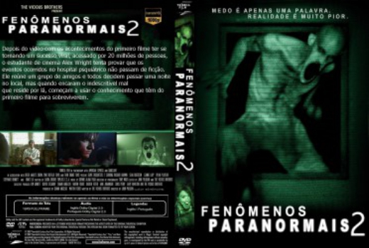

Fenômenos Paranormais 2 (2012)


Medo é apenas uma palavra. Realidade é muito pior.

Avaliação (TMDb):


5.5/10 (623 votos)
Avaliação (Usuário):
Outro Título:Grave Encounters 2 (Título Original)
País:Canada, 95 minutos
Idiomas falados:Inglês, Português
Gênero(s):Terror
Diretor(s):John Poliquin
Codec:MPEG-2 (DVD)
Número: 1459
Sinopse:
Um estudante de cinema que está obcecado com os Encontros graves filme estabelece com o seu amigos para visitar o hospital psiquiátrico retratado no filme original.
Elenco:
Reese Alexander, Stephanie Bennett, Jeffrey Bowyer-Chapman, Richard Harmon, Howie Lai, Leanne Lapp, Meeshelle Neal, Dylan Playfair, Andrew Amphlett, Sean Rogerson
Tipo de mídia: DVD5,
Legendas: Inglês, Português
Alugado: Não
Tela: 16:9 Widescreen